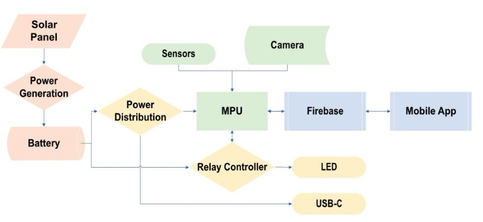

SolarEye Security System
 GitHub-RepositoryThe SolarEye Security System is an advanced, embedded security solution designed for real-time monitoring and remote surveillance. Built on a Raspberry Pi SC15184, the system integrates sensor acquisition, camera control, and live streaming to provide users with continuous security updates. Using Firebase, it enables real-time event logging, database updates, and remote access via a mobile application. The system is engineered to detect and respond to security events dynamically, ensuring reliability in smart home or industrial security applications.
To enhance functionality, the project features a custom-designed 4-layer PCB incorporating a MOSFET relay for efficient power management and control of the system's real-time operations. The embedded RTOS-based control system allows for precise task scheduling and seamless communication between hardware and software components. The SolarEye Security System was presented at IEEE TPEC 2025, demonstrating its innovative approach to smart security, embedded systems, and IoT-driven remote monitoring.